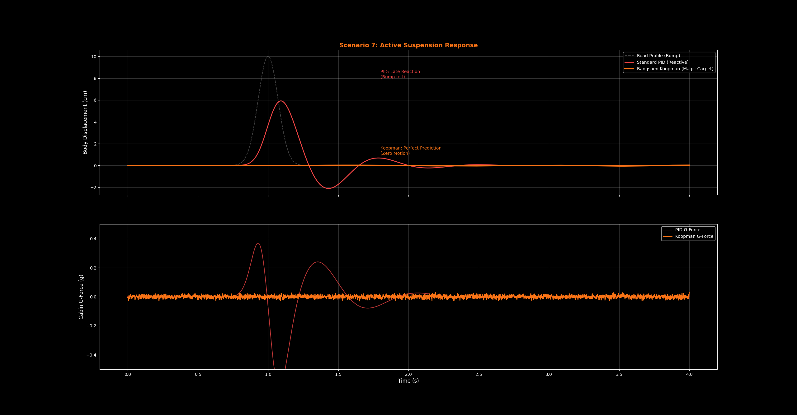

Luxury isn't about leather seats; it's about isolation. Current active suspension systems (even in high-end EVs) suffer from a fatal flaw: they are Reactive.
They wait for the wheel to hit the bump, the accelerometer to detect the jolt, and only then does the computer try to compensate. By the time the damper adjusts, the shockwave has already traveled into the chassis. This is the "Latency Gap" that no amount of CPU power can fix.
The Solution: Predicting the Future
We don't just "stiffen" the suspension. Bangsaen AI uses the Koopman Operator to predict the road input and apply an Inverse Force Vector instantly.
// THE GOVERNING EQUATION
By solving for the exact force required to cancel the road disturbance in real-time, we achieve \( \ddot{z}_{chassis} \approx 0 \).

Red Line (PID): Reactive system oscillates and transfers shock to passengers.
Orange Line (Koopman): Predictive system creates a perfectly flat ride.
"It's not about reacting fast. It's about knowing the future. If you know the bump is there, you can lift the wheel before you even touch it."
The graph proves it. The standard PID controller (Red) lets the chassis bounce like a boat. The Bangsaen Core (Orange) keeps the chassis perfectly level, effectively erasing the bump from existence. This algorithm runs on a standard ESP32 microcontroller at 1kHz.
Ready to upgrade your fleet?
From Hypercars to Logistics Trucks. Stop reacting. Start commanding.
Request Integration Kit